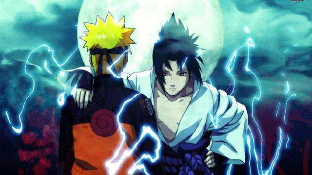
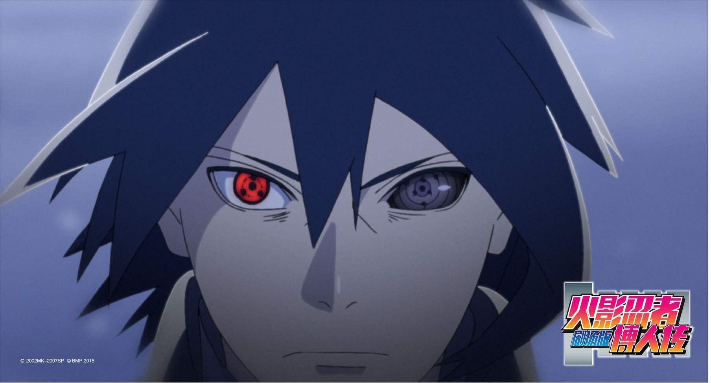
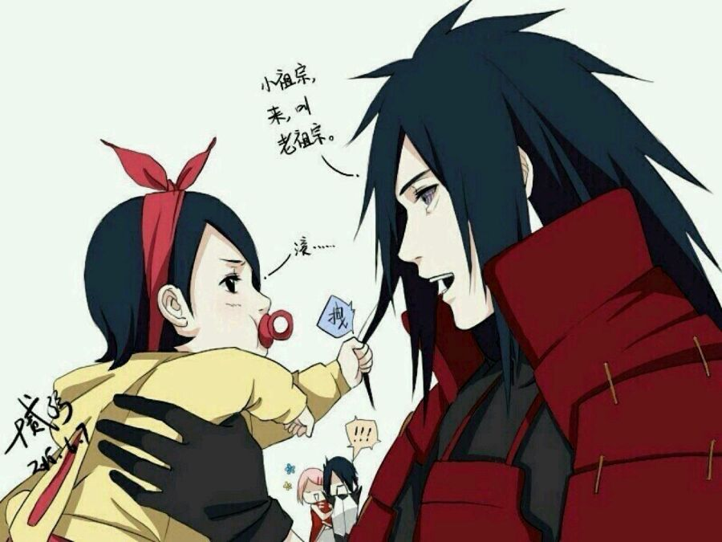

首页
归档
清单
留言板
友人帐
赞赏
关于
小破站
一个小站
Hi,陌生人你好
You got to put the past behind you before you can move on.
Start：Naruto vs Sasuke!
兄弟の羁绊
电视动画《火影忍者》改编自日本漫画家岸本齐史的同名漫画，2002年10月3日在东京电视台系列全6局、岐阜放送首播，共220话；第二季《火影忍者疾风传》于2007年2月15日－2017年3月23日在东京电视台播出，共500话；累计全720话。 故事成功地将原本隐藏在黑暗中，用世界上最强大的毅力和最艰辛的努力去做最密不可宣和隐讳残酷的事情的忍者，描绘成了太阳下最值得骄傲最光明无限的职业。 系列续作《BORUTO -火影新世代- 》2017年4月播出。

Start：Boruto!
儿子传动画的开始
电视动画《火影忍者》改编自日本漫画家岸本齐史的同名漫画，2002年10月3日在东京电视台系列全6局、岐阜放送首播，共220话；第二季《火影忍者疾风传》于2007年2月15日－2017年3月23日在东京电视台播出，共500话；累计全720话。 故事成功地将原本隐藏在黑暗中，用世界上最强大的毅力和最艰辛的努力去做最密不可宣和隐讳残酷的事情的忍者，描绘成了太阳下最值得骄傲最光明无限的职业。 系列续作《BORUTO -火影新世代- 》2017年4月播出。

Start：常用的工具小站!
常用的小站
图片去底色的小站(＾Ｕ＾)ノ~ＹＯ
图片转为ico的小站ᕦ(･ㅂ･)ᕤ
在线ps的小站(✪ω✪)
